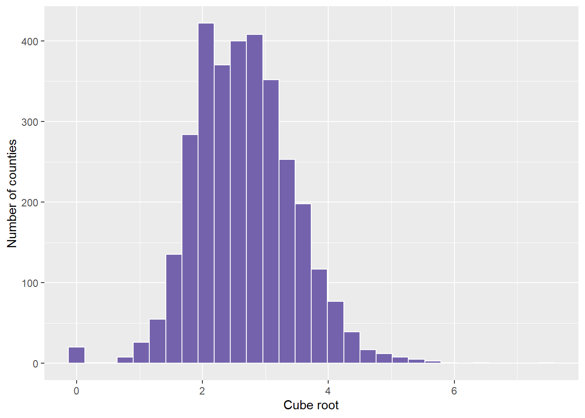

Math notation is a universal language in analytics and data science.
Appears in:
Formulas (e.g., regression equations)
Algorithms (e.g., gradient descent)
Documentation (e.g., academic papers or software manuals)
Understanding notation helps with:
Communication
Model interpretation
Data-driven decision-making
Variables and Subscripts
Variables represent unknowns or data values: \(x,\ y,\ p\)
Subscripts identify specific elements: \(x_1,\ x_2,\ \ldots,\ x_n\)
In most formulas, \(n\) typically represents the sample size or the total number of observations in the dataset.
Example: \(x_i = \text{the } i\text{-th observation in a dataset}\)
Greek Letters in Math
\(\mu\) — population mean
\(\sigma\) — population standard deviation
\(\beta\) — regression coefficient
\(\varepsilon\) — error term
\(\alpha\) — significance level (e.g., 0.05 in hypothesis testing)
\(\lambda\) — regularization parameter (e.g., in Ridge or Lasso regression)
\(\theta\) — model parameters (commonly in machine learning)
\(\pi\) — probability of success or class membership (e.g., in classification)
\(\Delta\) — change or difference between quantities
\(\Sigma\) — summation symbol (capital sigma)
Creating a new function vs using a built in function
Function_name: The name you assign to your function (e.g., my_sum)
<- Assignment operator: stores the function under the name
function(): Declares that you’re defining a function
arguments: Inputs the function expects (e.g., x, y)
{} The body: code that runs when the function is called
return(): Specifies the value that gets returned (can also omit this in simple cases)
Summation and Product Notation
Summation means to add values:
\[
\sum_{i=1}^n x_i = x_1 + x_2 + \ldots + x_n
\]
x <-1:3#sample mean is 2sample_mean <- (1+2+3)/3; sample_mean
[1] 2
mean(x)
[1] 2
my_mean <-function(x) { total <-sum(x) n <-length(x) result <- total / nreturn(result)}my_mean(x)
[1] 2
mean(x)
[1] 2
#sample variance is 1sample_variance <-sum((x-sample_mean)^2/(3-1)); sample_variance
[1] 1
my_variance <-function(x) { n <-length(x) m <-mean(x) var <-sum((x - m)^2) / (n -1)return(var)}my_variance(x)
[1] 1
var(x)
[1] 1
#weighted average#y are a students grades for each categoryy <-c(.8, .9, 1, .75)#w is the weight of each grade categoryw <-c(.25, .4, .2, .15)sum(w) #weights add to 1, so denominator in formula is 1.
[1] 1
sum(y*w)
[1] 0.8725
#The student would make a 87.25 in the class with those grades and weights.my_weighted_mean <-function(x, w) {if (length(x) !=length(w)) {stop("x and w must be the same length") } sum_w <-sum(w)if (sum_w ==0) {stop("Sum of weights cannot be zero") } weighted_mean <-sum(x * w) / sum_wreturn(weighted_mean)}my_weighted_mean(y,w)
a <-c(2, 4, 6)b <-c(1, 3, 5)dot_product <-sum(a * b)dot_product
[1] 44
a %*% b
[,1]
[1,] 44
my_dot_product <-function(a, b) {if (length(a) !=length(b)) {stop("Vectors must be of equal length") } result <-sum(a * b)return(result)}my_dot_product(a,b)
K-Means Clustering is an unsupervised machine learning algorithm used to group data points into k clusters based on similarity, essentially measuring the within-cluster variance.
Each data point is assigned to the cluster with the nearest centroid (mean of the cluster).
The algorithm aims to minimize the total within-cluster variance — that is, the distance between points and their cluster centers.
A function maps each element from one set to exactly one element in another set
Notation: \(f: A \rightarrow B\)
Example:
\(f(x) = x^2\)
\(f: {1, 2, 3} \rightarrow {1, 4, 9}\)
One-to-one (injective), onto (surjective), and bijective functions
Function Basics
Function Properties
Injective: No two inputs map to the same output
Surjective: Every element in the codomain is mapped to by some input
Bijective: Both injective and surjective
Example: \(f(x) = 2x\) on domain \(\mathbb{Z}\) is injective but not surjective on \(\mathbb{Z}\)
Logic Basics
Statements are declarative sentences that are either true or false
Logical operators:
\(\neg\): NOT
\(\wedge\): AND
\(\vee\): OR
\(\rightarrow\): IMPLIES
\(\leftrightarrow\): IF AND ONLY IF
Example: \(p = \text{"It is raining"}, q = \text{"It is cloudy"}\)
\(p \rightarrow q\): If it is raining, then it is cloudy
Odds
Implement probability calculations
## Distance to substance abuse facility with medication-assisted treatmentdist.mat <-read.csv("data/opioidFacility.csv")# Review the datasummary(dist.mat)
STATEFP COUNTYFP YEAR INDICATOR
Min. : 1.00 Min. : 1.0 Min. :2017 Length:3214
1st Qu.:19.00 1st Qu.: 35.0 1st Qu.:2017 Class :character
Median :30.00 Median : 79.0 Median :2017 Mode :character
Mean :31.25 Mean :101.9 Mean :2017
3rd Qu.:46.00 3rd Qu.:133.0 3rd Qu.:2017
Max. :72.00 Max. :840.0 Max. :2017
VALUE STATE STATEABBREVIATION COUNTY
Min. : 0.00 Length:3214 Length:3214 Length:3214
1st Qu.: 9.25 Class :character Class :character Class :character
Median : 18.17 Mode :character Mode :character Mode :character
Mean : 24.04
3rd Qu.: 31.00
Max. :414.86
library(tidyverse)# Graph the distance variable which is called Value but represents miles. # Note that this graph does not look normal - instead, it looks right or positive skewed. ggplot(dist.mat, aes(VALUE)) +geom_histogram(fill ="#7463AC", color ="white") +labs(x ="Miles to nearest substance abuse facility", y ="Number of counties")
`stat_bin()` using `bins = 30`. Pick better value with `binwidth`.
options(scipen=999)pnorm(35, mean =30, sd =3/sqrt(5), lower.tail =FALSE)
[1] 0.00009697081
cuberoot <-ggplot(dist.mat.cleaned, aes(miles.cube.root)) +geom_histogram(fill ="#7463AC", color ="white") +labs(x ="Cube root", y ="Number of counties"); cuberoot
`stat_bin()` using `bins = 30`. Pick better value with `binwidth`.

logged <-ggplot(dist.mat.cleaned, aes(miles.log)) +geom_histogram(fill ="#7463AC", color ="white") +labs(x ="Log", y ="Number of counties"); logged
`stat_bin()` using `bins = 30`. Pick better value with `binwidth`.
Warning: Removed 20 rows containing non-finite outside the scale range
(`stat_bin()`).
inversed <-ggplot(dist.mat.cleaned, aes(miles.inverse)) +geom_histogram(fill ="#7463AC", color ="white") +labs(x ="Inverse", y ="Number of counties")+xlim(0, 1); logged
`stat_bin()` using `bins = 30`. Pick better value with `binwidth`.
Warning: Removed 20 rows containing non-finite outside the scale range
(`stat_bin()`).
squareroot <-ggplot(dist.mat.cleaned, aes(miles.sqrt)) +geom_histogram(fill ="#7463AC", color ="white") +labs(x ="SQRT", y ="Number of counties"); squareroot
`stat_bin()` using `bins = 30`. Pick better value with `binwidth`.
#* We can use the equation to calculate the z-score for a county where you have to drive 15 miles to a facility. (15^(1/3) -2.66)/0.79
[1] -0.2453012
# Next, we can calculate z for a county with residents who have to travel 50 miles to the nearest facility. In the transformed miles variable, this would be the cube root of 50, or a value of 3.68. (50^(1/3)-2.66)/0.79
[1] 1.296242
# A clinical trial shows that 10% of patients develop mild side effects from a new medication.# What is the probability of developing side effects?# + What are the odds in favor of developing side effects?# + What are the odds against developing side effects?# Givenp_side_effect <-0.1# Odds in favorodds_side_effect <- p_side_effect / (1- p_side_effect)odds_side_effect